10. Health inequalities across places and neighbourhoods
19 November 2026
Where we live matters for health. But why do people in poorer areas have worse health? Is it because different people live there, because the places themselves are different, or because wider political and economic structures shape both people and places?
Today we examine geographical inequalities at regional, municipal, neighbourhood and hyperlocal levels. We retain the central distinction between composition and context, then extend it to relational and political-economy perspectives. The mandatory reading uses a Danish refugee allocation policy to test whether neighbourhood disadvantage causes poorer health. The applied part focuses on multilevel regression, control variables and implications for your empirical paper.
Today’s route: Field visit to Tragwerk Luzern → From national to hyperlocal areas → Composition and context → Relational and political economy perspectives → The mandatory reading → Multilevel modelling → Good and bad controls.
Learning objectives: By the end of the session, you should be able to recognise spatial health inequalities at different geographical scales; distinguish compositional from contextual explanations; interpret the identification strategy and findings of Hasager and Jørgensen (2026); understand random-intercept and random-slope multilevel models; and consider which covariates belong in an empirical model.
Hasager and Jørgensen (2026) — Read the article.
Focus on the research design (the Danish Spatial Dispersal Policy), Table 4 (main results), Table 11 (apartment-building versus larger area effects), and the discussion of mechanisms. How do the authors address residential selection?
Organisational: Field trip to Tragwerk Luzern
Thursday, 19 November 2026, 08:00–10:00 — field visit to Tragwerk Luzern, a local support centre for people affected by addiction, poverty and social disadvantage.
During the visit, consider how individual circumstances and local social and institutional environments interact. What can a local support service do, and which determinants of disadvantage lie beyond its immediate reach?
Which aspects of the work at Tragwerk could be understood as addressing compositional factors (characteristics and resources of people), and which as addressing contextual factors (local institutions and opportunities)? Are these two categories easy to separate?
1. Health inequalities at different geographical levels
Warm-up: Why does health vary across places?
WARM-UP EXERCISE
Why is there health inequality across …
- regions (for example, Swiss cantons)?
- municipalities?
- neighbourhoods?
For each level, think of one possible explanation.
From national to (hyper)local areas
A countrywide average can hide considerable differences at smaller scales. The same question—where do people live, and how healthy are they?—can be asked at increasingly fine levels of geography.
Regional level: Swiss cantons and European regions
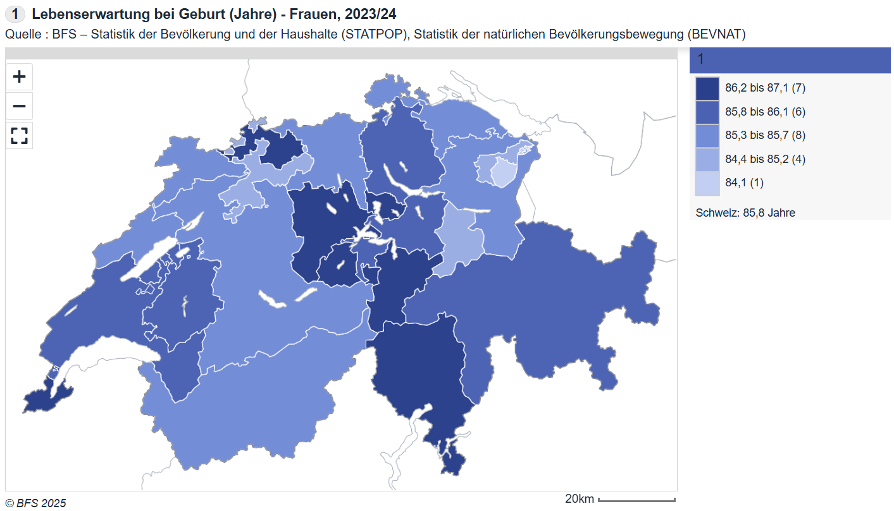
Explore the original FSO indicator map.
The map shows geographical differences within Switzerland. What might explain them? Differences in the distribution of residents, in cantonal institutions, or both?
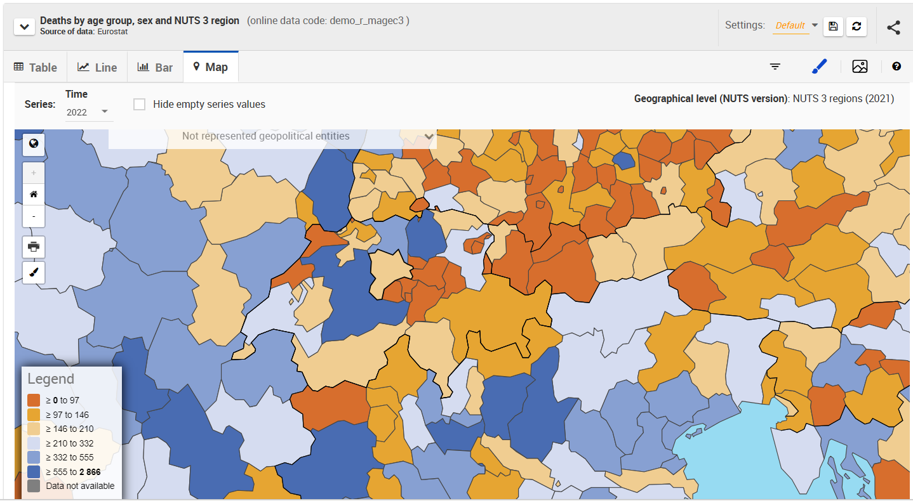
For cross-regional comparisons, NUTS (Nomenclature of Territorial Units for Statistics) provides a standard classification of European regions. The choice of geographical unit influences what we observe.
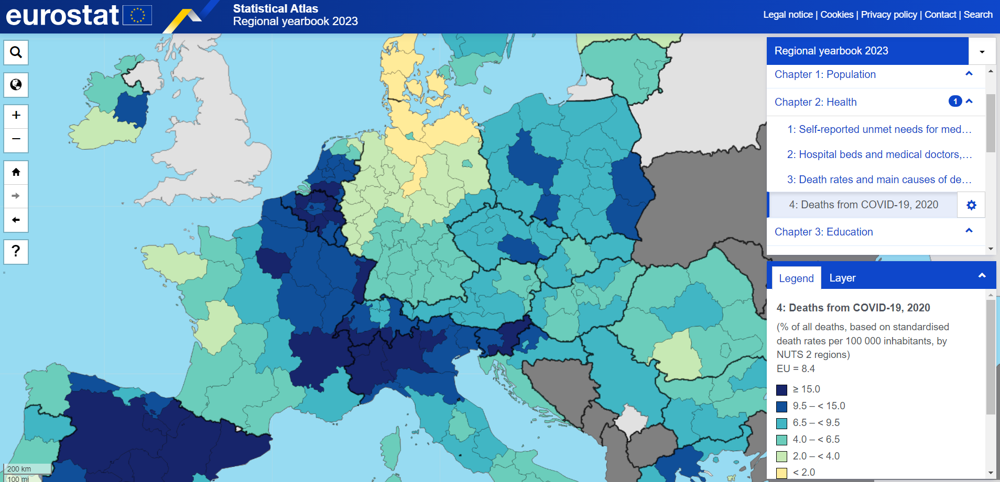
Municipal level: Life expectancy in Germany
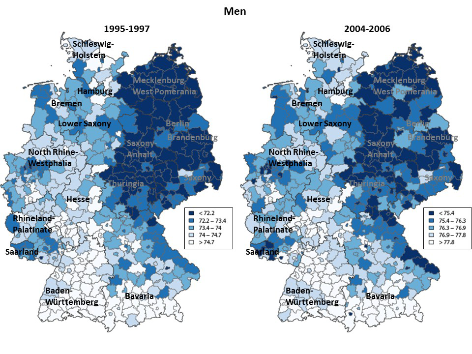
Question: Are municipal boundaries meaningful units for health research? Which inequalities might disappear when we aggregate areas?
Neighbourhood level: Chicago and Geneva
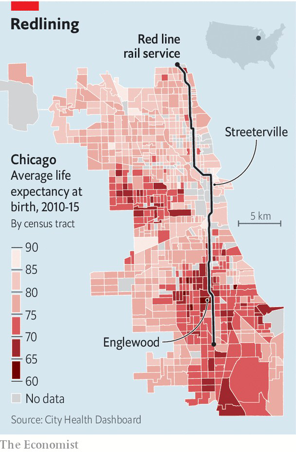
Read the accompanying article in The Economist.
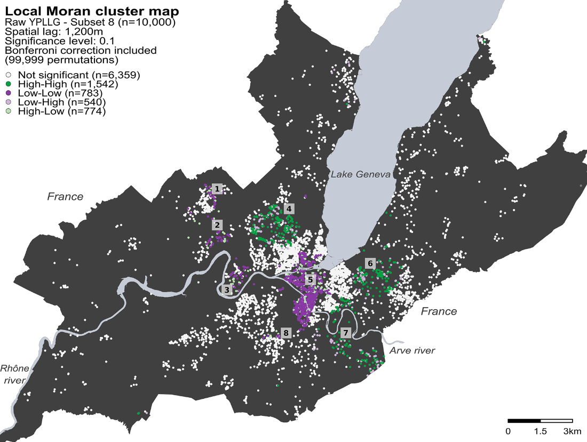
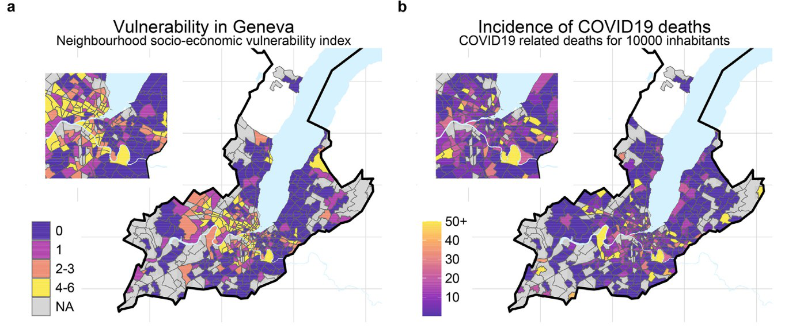
These examples show how geographical variation can be visible within a single city, not only between countries or cantons. A map documents spatial differences; it does not yet establish what causes them.
2. Measuring neighbourhood socioeconomic position in Switzerland
The Swiss neighbourhood index of socioeconomic position (Swiss-SEP)
The original Swiss-SEP was developed by Panczak et al. (2012) using the 2000 Census and geocoded residential addresses. A neighbourhood was defined using the 50 nearest households along the road network, rather than an administrative district.
The index combines four indicators:
- Income, proxied by median rent;
- Education;
- Occupation;
- Crowding.
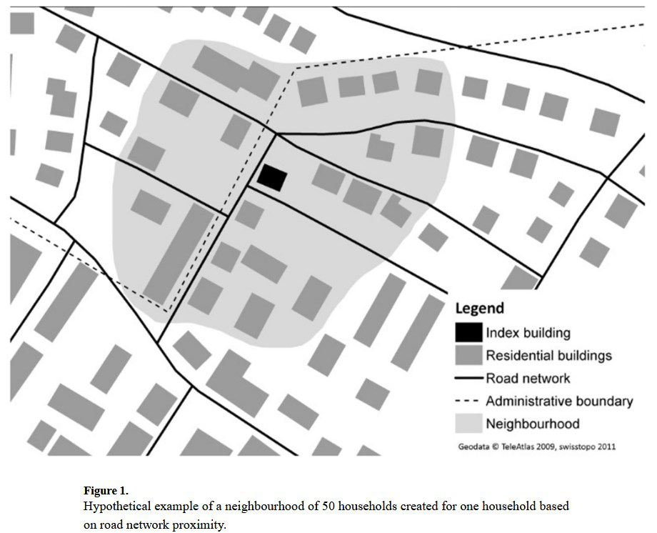
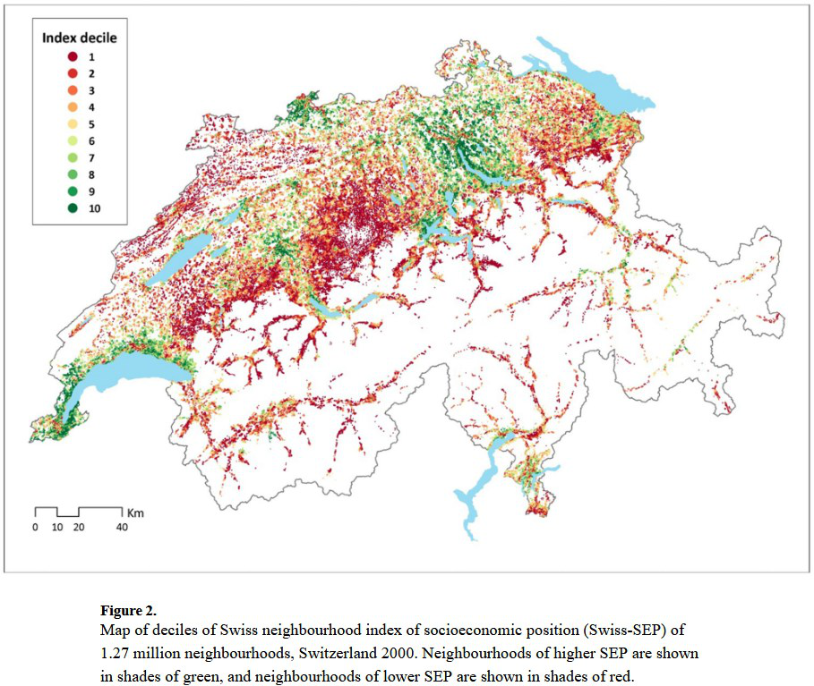
Neighbourhood SEP and health outcomes
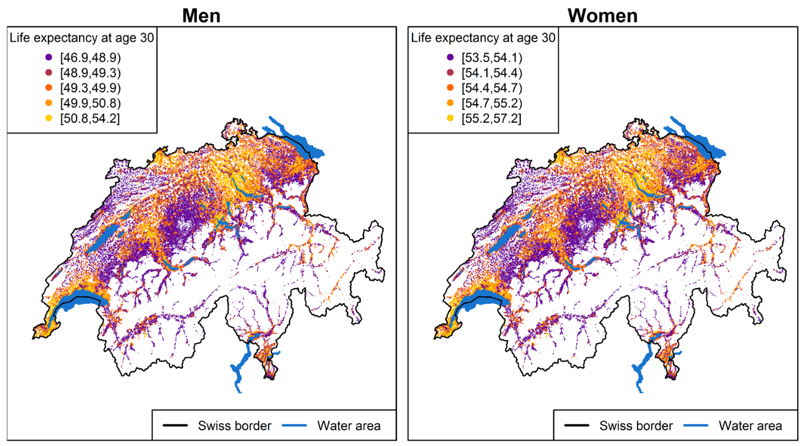
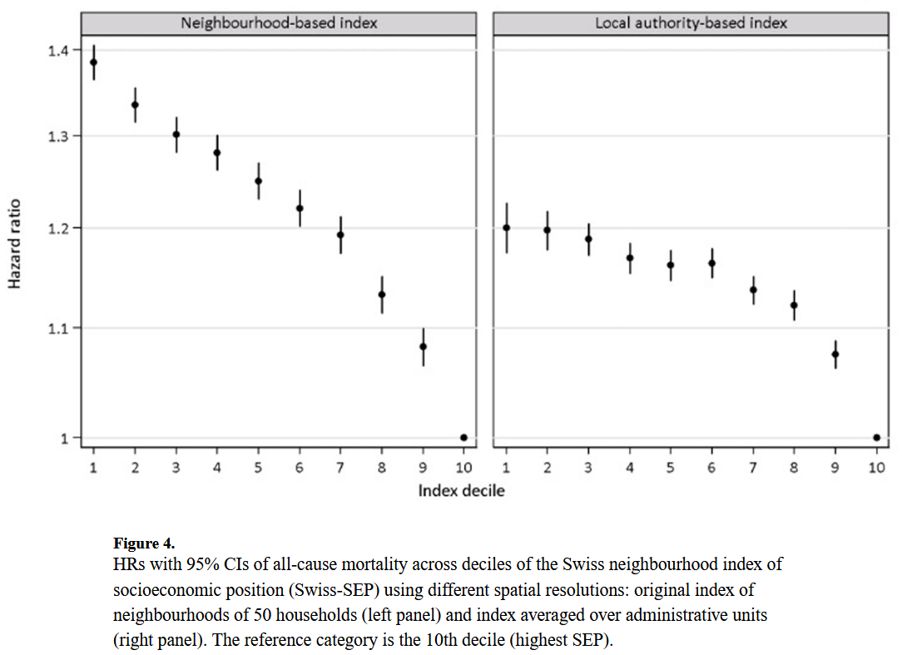
Notice how much the estimated social gradient can change when neighbourhood SEP is measured at a finer geographical scale. This is a practical consequence of the modifiable areal unit problem (MAUP): results can depend on how we delineate and aggregate places.
During the first two COVID-19 waves in Switzerland, less affluent neighbourhoods also experienced substantial differences along the care cascade, from testing to hospitalisation and mortality (Riou et al. 2021).
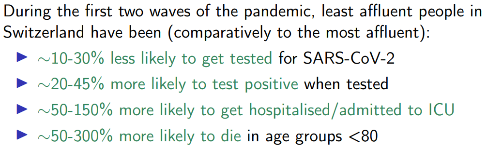
Updated Swiss-SEP 2
Swiss-SEP 2 updates and revalidates the index using 2012–2015 microcensus data (Panczak et al. 2023).
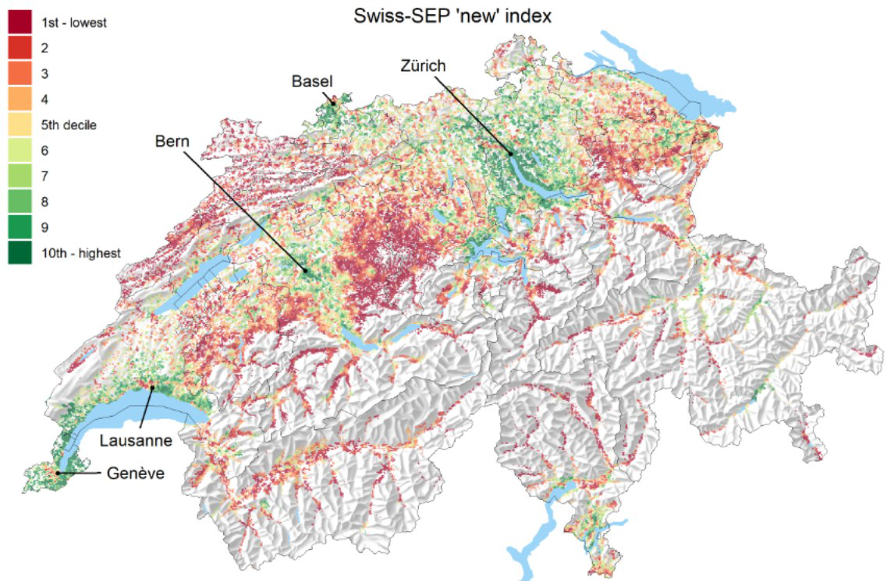
Explore a Swiss-SEP 2-based interactive map from Tages-Anzeiger, with examples from Zürich and Lucerne.
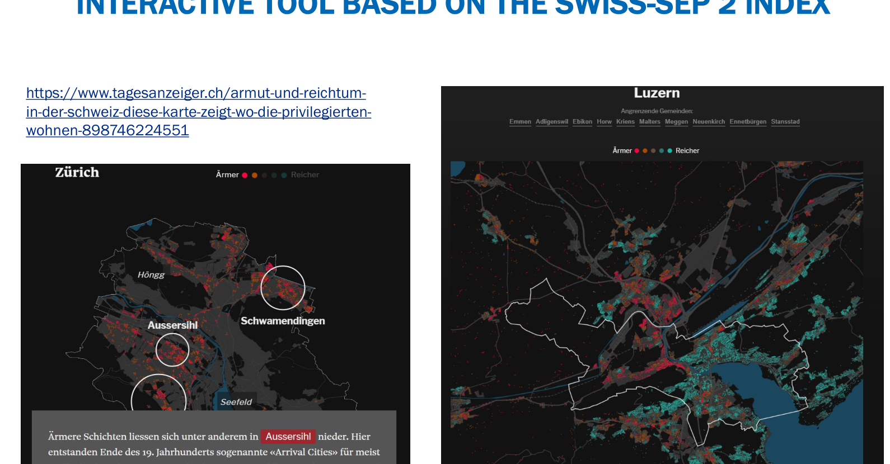
Explore the Swiss-SEP 2 interactive map.
MAP DISCUSSION
Look at the map for Lucerne. How much socioeconomic variation might be hidden when we only compare municipalities or cantons? What can and cannot be inferred from the map about residents’ health?
3. Why does health vary across places? Composition versus context
Two explanations help organise the evidence:
| Explanation | Main idea | Examples |
|---|---|---|
| Compositional | Health differences reflect the characteristics of individuals living in different places. | Age structure, education, income, occupational risks, health behaviours. |
| Contextual | Health differences reflect features of the local environment affecting residents. | Housing, pollution, green space, local labour markets, social networks, services and institutions. |
Individual characteristics (demographic, behavioural and socioeconomic) and local environments (economic, social, physical and institutional) can both shape geographical health inequalities.
EXERCISE | Composition or context?
Pick one level—region, municipality or neighbourhood. Think of one compositional and one contextual explanation for differences in health at that level.
Example: Does moving to Jackson Hole make you live longer?
Teton County, Wyoming (home of Jackson Hole), recently reported a remarkable life expectancy of 94 years. But does living there actually make people healthier?
Demographer Jennifer Beam Dowd (Dowd 2026) raises two important concerns:
- Residential selection (composition): Wealthy, healthy and physically active people may be more likely to move to Jackson Hole, while older residents with declining health may move away.
- Measurement: In a small population, life expectancy estimates are sensitive to the numbers of deaths and residents at each age. The CDC-based estimate is 88.9 years, considerably below the locally reported figure of 94.
This illustrates why high life expectancy in a place does not necessarily imply a causal health benefit of living there. Both selective migration and the measurement of mortality rates matter.
DISCUSSION
If you moved to Jackson Hole tomorrow, would you expect to live longer? What evidence would we need to distinguish a genuine place effect from residential selection?
The relational perspective
Composition and context should not be regarded simply as two competing explanations. People interact with environments, and environments are also shaped by the people living in them.
The relational perspective emphasises a mutually reinforcing and reciprocal relationship between people and place (Cummins et al. 2007).
Testing composition and context
The following figure from Leyland and Groenewegen (2020a) illustrates predicted health according to individual and area social capital.
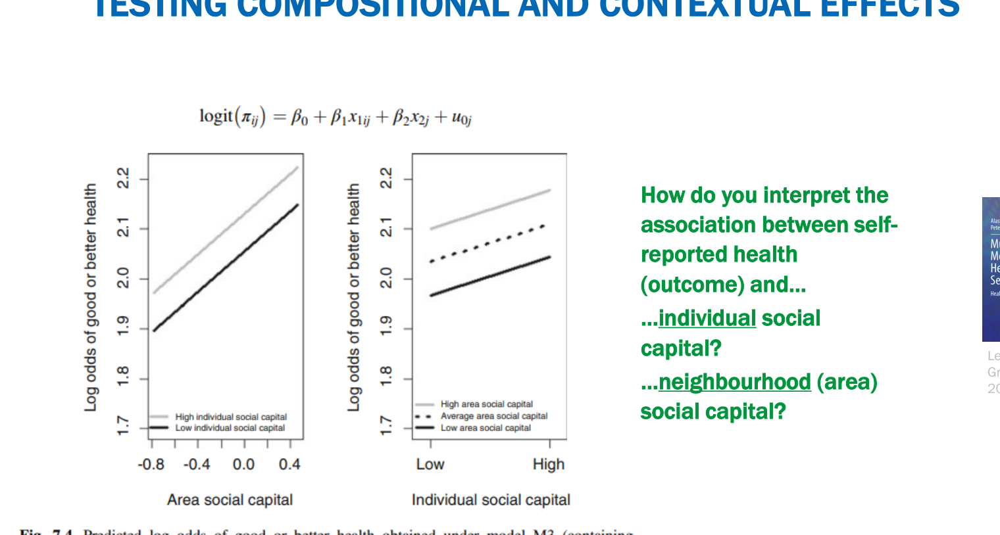
How do we interpret the association of self-rated health with individual social capital and with neighbourhood (area) social capital?
Testing the relational perspective: Interactions
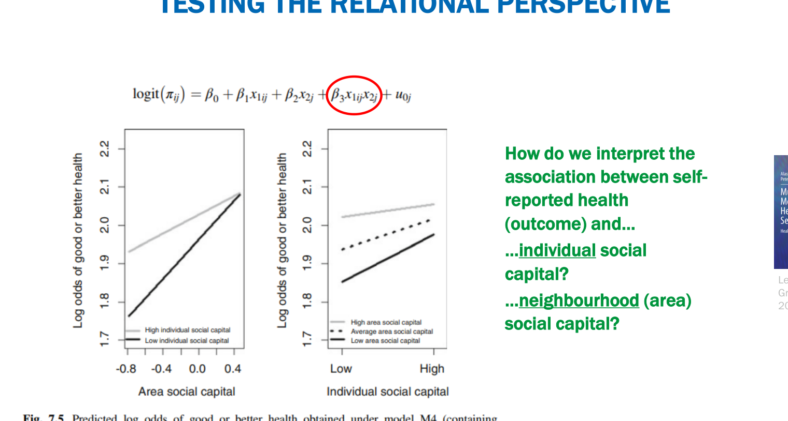
If the lines are not parallel, the association of one variable with health depends on the value of the other. In statistical terms, we can test a cross-level interaction.
A multilevel model can include both individual-level predictors and area-level predictors, as well as interactions between them. But including predictors from both levels does not by itself establish that an area-level association is causal.
4. Do poorer neighbourhoods cause worse health?
Hasager and Jørgensen (2026) poses precisely the causal question raised by the composition–context distinction: is the poor health of people in poorer places a neighbourhood effect, or the result of residential selection?
Research design: A quasi-experiment in Denmark
- Policy setting: Denmark’s Spatial Dispersal Policy allocated refugees to housing across municipalities and neighbourhoods during 1986–1998.
- Population: 21,965 refugees aged 18–64 at arrival, identified from administrative registers.
- Treatment: Initial assignment to neighbourhoods in the bottom, middle or top third of median neighbourhood income.
- Outcomes: Subsequent hospital diagnoses of lifestyle-related diseases, particularly during 8–15 years after arrival.
- Identification: The allocation procedure created quasi-random variation conditional on the information available to housing officers. The authors test whether initial characteristics not known to housing officers predict the neighbourhood of placement.
They compare refugees assigned within the same municipality, with controls for individual characteristics at arrival, arrival-year and municipality fixed effects, and municipal characteristics.
If people with poorer health or fewer resources disproportionately move to low-income neighbourhoods, a simple association between neighbourhood income and health is not a causal neighbourhood impact. The dispersal policy reduces this problem because refugees had limited influence over their initial placement.
The causal interpretation still rests on the conditional allocation assumption and on the way the study defines initial neighbourhood exposure—not on randomisation in the strict experimental sense.
Main results
Refugees initially assigned to the lowest-income third of neighbourhoods had an approximately 12% higher relative risk of a lifestyle-related disease diagnosis 8–15 years after arrival than refugees assigned to middle- or high-income neighbourhoods.
In absolute terms, the difference was about 1.8–1.9 percentage points (Table 4, Panel b). The authors find no statistically significant average effect on hospital-diagnosed mental disorders.
What is meant by a neighbourhood? Scale matters again
The paper moves from municipalities to parishes (roughly 5,000 residents on average) and even to apartment buildings (roughly 15 residents on average in the sample). The very local environment is especially predictive of later health outcomes (Table 11).
The authors find little evidence that differences in municipal healthcare access or individual earnings and employment are the main mechanisms. They suggest that immediate neighbours and local amenities (potentially including social interaction, food and physical activity opportunities) may matter. These mechanisms are not directly established, however.
DISCUSSION | Neighbourhood effects and causal identification
- How does the refugee allocation policy help distinguish composition from context?
- Why might the apartment building matter more than the larger municipality? Which possible mechanisms can the authors actually test?
- What is the estimand: the effect of initial assignment, of neighbourhood income alone, or of a bundle of correlated local conditions?
- Would the same findings necessarily apply to the general Swiss population? Why or why not?
5. Politics, institutions and the life course of place
The political economy perspective
A narrow focus on composition versus context can obscure a more structural question: Why do different people live in different places in the first place?
- Residential sorting and segregation are shaped by housing markets, discrimination, employment and public policy.
- Slater (2013) argues that a focus on where you live affects your life chances risks neglecting the reverse relationship: life chances affect where people can live.
- Bambra et al. (2019) call for scaling up to the wider political and economic structures that shape both places and health.
Example: Welfare-state institutions
Welfare-state institutions can influence the distribution of people across places, the resources available to them, and the contextual conditions of different places. Beckfield et al. (2015) distinguish four mechanisms:
- Redistribution;
- Compression;
- Mediation;
- Imbrication (overlap between institutions).
For example, redistributive policies can change household resources, whereas social housing or regional public-service provision may alter the environments in which people live. Political institutions are thus not external to the composition/context distinction; they help produce both sides of it.
The life course of place
Pearce et al. (2018) extend the life-course perspective from Session 9 to geographical exposures:
- Places change over time;
- People move between places at different ages;
- Exposure during some life stages may have lasting consequences.
Using the Lothian Birth Cohort 1936, the authors relate childhood neighbourhood disadvantage to mental health in later life and examine the role of green space, particularly in disadvantaged areas.
6. Applied focus: Multilevel regression
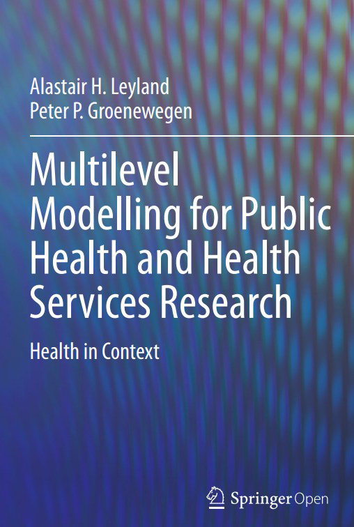
Why multilevel modelling?
Health data often have a hierarchical structure:
- Individuals within households;
- Individuals or households within neighbourhoods;
- Neighbourhoods within regions or countries;
- Alternatively, patients within hospitals.
Multilevel models account for this clustering and allow us to analyse individual and area variation together (Leyland and Groenewegen 2020b).
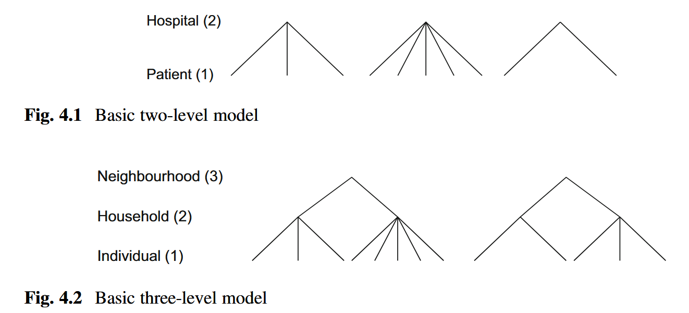
6.1 Random intercepts: Do regions have different average health?
Consider the following example: self-reported health in Switzerland, using ESS, with individuals nested in regions.
- Dependent variable: self-rated health (
health; higher values mean worse health); - Individual-level predictor: household income decile (
hinctnta); - Grouping: region (
regunitor the appropriate region identifier for the ESS round); - Question: Do average health levels differ between regions after accounting for income?
A two-level random-intercept model can be written:
\[\text{health}_{ij} = \beta_0 + \beta_1 \text{income}_{ij} + u_{0j} + \varepsilon_{ij}\]
where \(i\) indexes people and \(j\) indexes regions. Each region has its own intercept \(\beta_0+u_{0j}\), while the income slope \(\beta_1\) is the same across regions.
library(dplyr)
library(lme4)
# Assume the cleaned ESS data frame is called 'ess'.
# Check available region variables and missing-value codes first.
ch_data <- ess |>
filter(cntry == "CH") |>
mutate(region = factor(regunit)) |>
filter(health %in% 1:5,
hinctnta %in% 1:10,
!is.na(region))
model <- lmer(health ~ hinctnta + (1 | region), data = ch_data)
summary(model)In Stata, the comparable command is:
keep if cntry == "CH"
mixed health hinctnta || region:- Fixed effects: The intercept and average income coefficient. Because the dependent variable is coded from 1 = very good to 5 = very bad, a negative income coefficient corresponds to better reported health at higher incomes.
- Random intercept variance: How much the regions differ in their baseline levels, conditional on the predictors.
- Residual variance: Remaining individual-level variation.
The intercept is formally the predicted outcome at income decile zero, outside the observed income scale; it is often better to centre income if the intercept itself is substantively important.
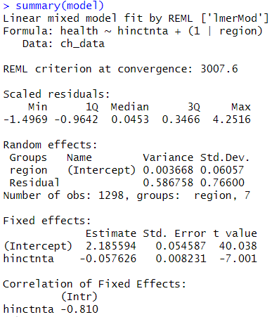
Important: This is a teaching example using a linear model for an ordinal outcome. A suitable multilevel ordinal model may be preferable for substantive analysis. Also, the number of Swiss regions is small; random-effect estimates can be unstable with few groups.
6.2 Random slopes: Does the income–health gradient vary by region?
A more flexible model allows each region to have its own income slope, in addition to its own intercept:
\[\text{health}_{ij} = \beta_0 + (\beta_1 + u_{1j})\text{income}_{ij} + u_{0j} + \varepsilon_{ij}\]
model_slope <- lmer(
health ~ hinctnta + (1 + hinctnta | region),
data = ch_data
)
summary(model_slope)mixed health hinctnta || region: hinctntaIn the random-intercept model, the estimated income gradient is constrained to be the same across regions. In the random-slope model, it can vary.
With very few regions (as in the Swiss ESS example), a model with random slopes may be poorly estimated or singular. For an empirical paper, a cross-country ESS analysis with more groups may be a more suitable illustration. Make sure you have enough observations within each country and enough countries at the higher level.
6.3 ESS and ISSP: What levels can we actually model?
| Analysis | Lower level | Higher level | Practical requirement |
|---|---|---|---|
| Cross-country ESS | Individuals | Countries (cntry) |
Comparable health and socioeconomic variables across countries; sufficient countries. |
| Within-Switzerland ESS | Individuals | ESS regions (check regunit and release) |
A usable regional identifier and enough observations per region; few groups are a limitation. |
| Cross-country ISSP | Individuals | Countries | Harmonised module and background items across countries. |
| Neighbourhood effects | Individuals | Small geographical areas | Geocoded area identifiers and measured local conditions—not usually available in ordinary public-use ESS/ISSP data. |
Both ESS and ISSP can support multilevel country comparisons. But country-level clustering is not the same as estimating a neighbourhood effect. A genuinely local analysis usually requires more finely geocoded or linked data, and specific protections for geographic confidentiality.
EXERCISE | Your own empirical paper
Could a multilevel model help answer your research question?
- What is the lower level and what is the higher level?
- Do you have a variable that identifies the higher-level units?
- Would you use a random intercept, a random slope, or neither?
- How many observations and groups are available?
Further multilevel modelling resources
- @leylandContextCompositionHow2020, Multilevel Modelling for Public Health and Health Services Research (open access).
- R package
lme4: documentation. - Paul Johnson’s guide to multilevel modelling in R.
7. Covariates: Good and bad controls
which covariates should go into a regression? Including more variables does not necessarily make an analysis more credible.
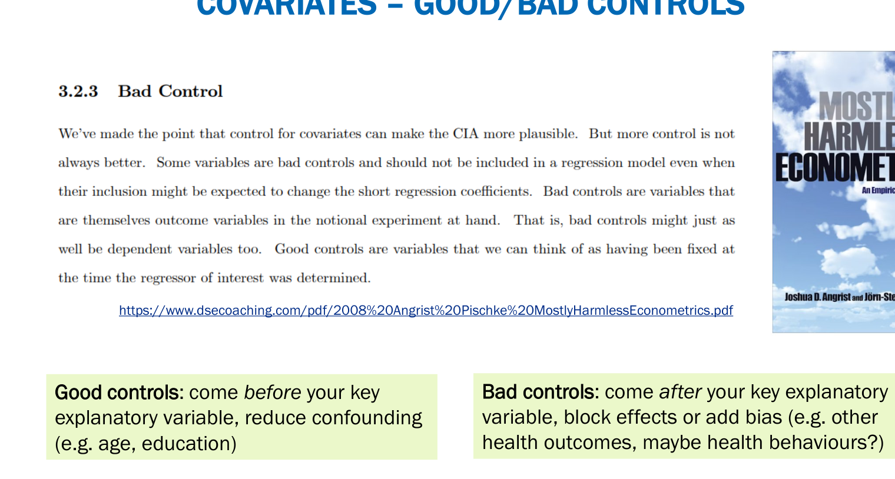
- Good controls can reduce confounding when they are common causes of the explanatory variable and the outcome.
- Bad controls may be consequences of the explanatory variable, particularly mediators, or may introduce selection/collider bias.
The distinction is determined by the causal question and the assumed causal structure, not simply by whether a variable is statistically associated with health.
Suppose we ask whether childhood neighbourhood disadvantage affects adult health. Adult income may lie on the pathway from childhood neighbourhood to health. Controlling for it could remove part of the effect we want to estimate.
But if our question concerns a different exposure and income is a pre-existing common cause of that exposure and health, income may be an appropriate confounder to adjust for.
Draw the causal pathway first. Then decide which adjustment set is appropriate.
Methodological considerations for your empirical paper
For your empirical paper:
- Specify a clear (causal) model: Identify the outcome and main explanatory variable. Drawing a causal path diagram is often helpful, even if it does not appear in the paper.
- Choose the right level of analysis: Individuals, regions, countries, or multiple levels?
- Select covariates deliberately: Include appropriate confounders and avoid inappropriate controls.
- Explain the intuition behind the statistical method you use.
- Know its strengths and limitations. In particular, distinguish cross-sectional association from a causal neighbourhood effect.
8. Takeaways
- Health inequalities exist at many geographical scales: regions, municipalities, neighbourhoods and even hyperlocal environments.
- Composition and context both matter, and the relational perspective emphasises their interaction.
- Politics and institutions shape places: Residential sorting, welfare-state institutions and the history of place cannot be ignored.
- Causal neighbourhood effects are hard to identify. Hasager and Jørgensen (2026) demonstrate how quasi-experimental allocation can reduce residential selection concerns.
- Multilevel regression makes it possible to analyse individual and group variation, but is not itself a causal design.
- Control selection matters: Start from the question and the hypothesised causal pathways, not an automatic list of covariates.
Final question: If disadvantage can have health consequences at very local geographical scales, which interventions should be local—and which require action at the regional or national level?
Further reading and resources
- Neighbourhood effects: Hasager and Jørgensen (2026)
- Swiss neighbourhood inequalities: Panczak et al. (2012), Panczak et al. (2023), Moser et al. (2014), Riou et al. (2021)
- Composition, context and multilevel models: Cummins et al. (2007), Leyland and Groenewegen (2020a), Leyland and Groenewegen (2020b)
- Politics, institutions and changing places: Bambra et al. (2019), Slater (2013), Beckfield et al. (2015), Pearce et al. (2018)